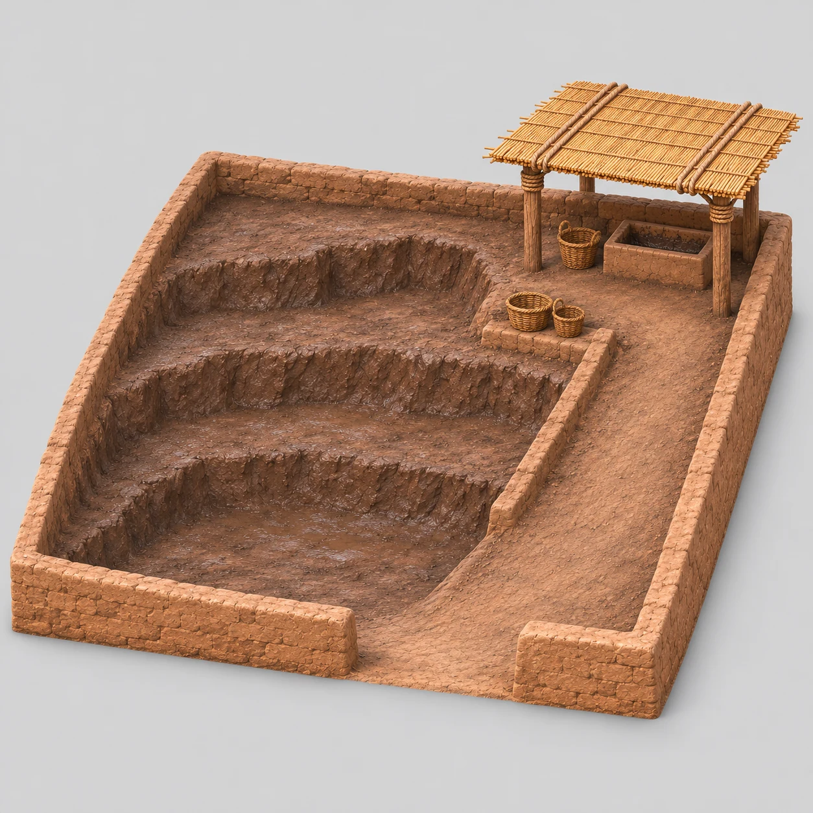
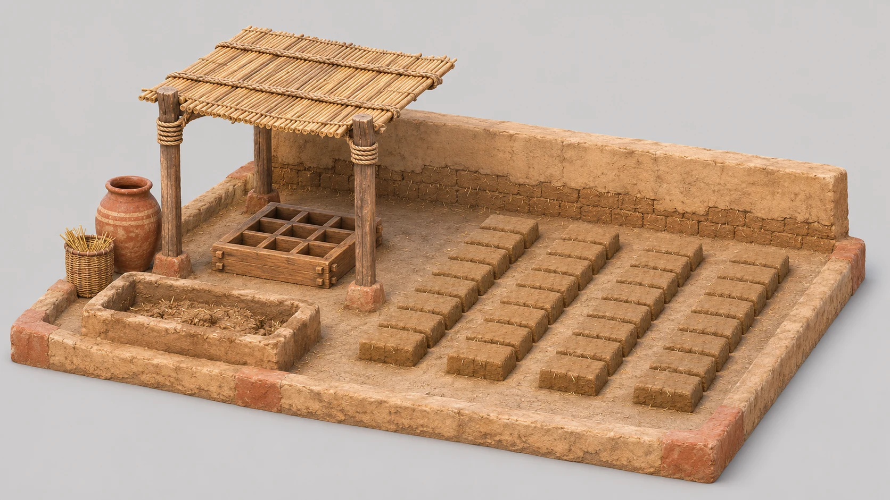
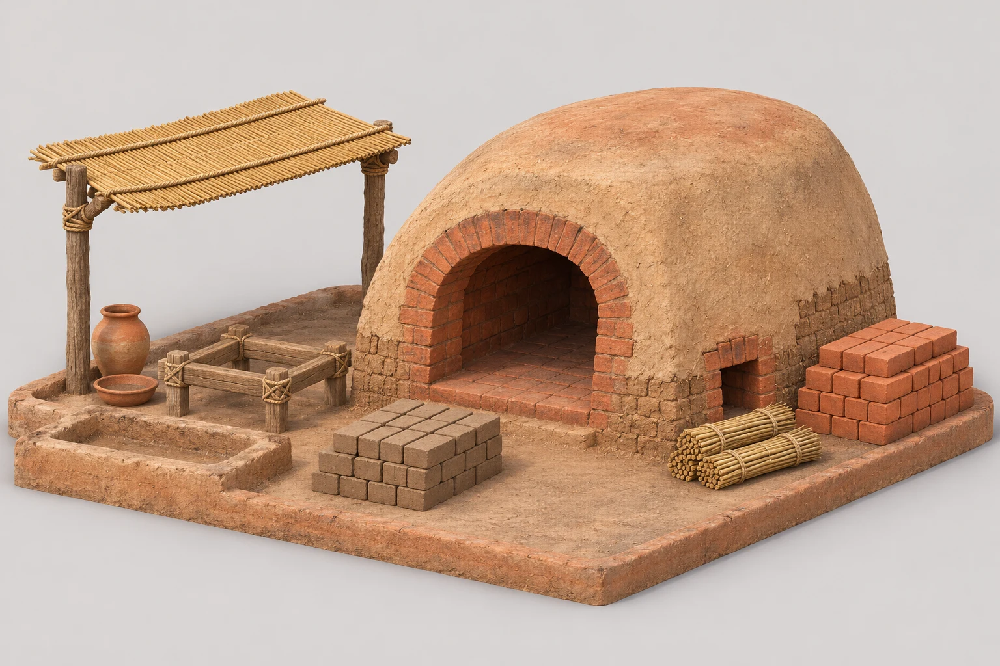
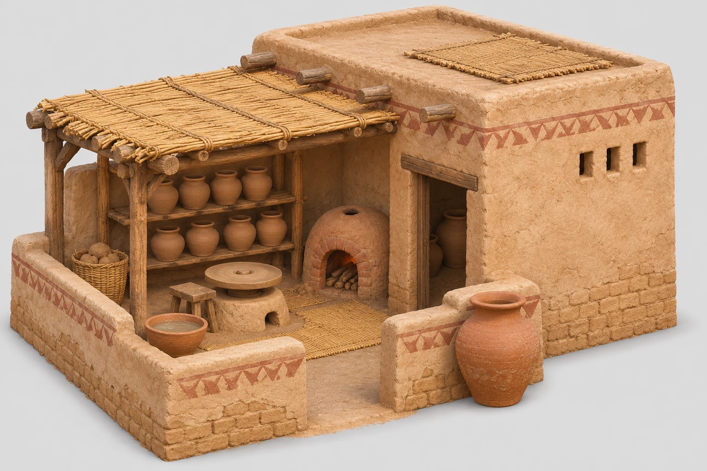
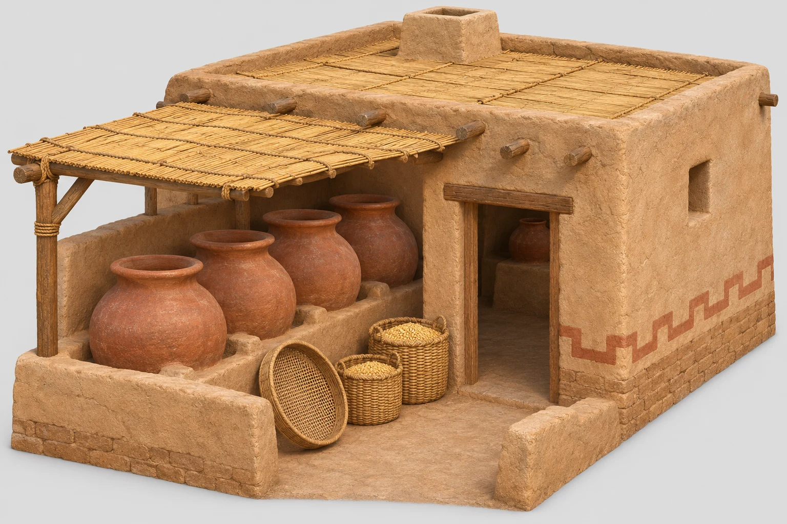
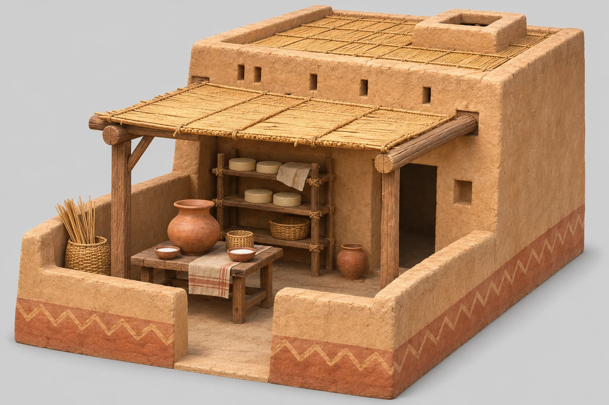
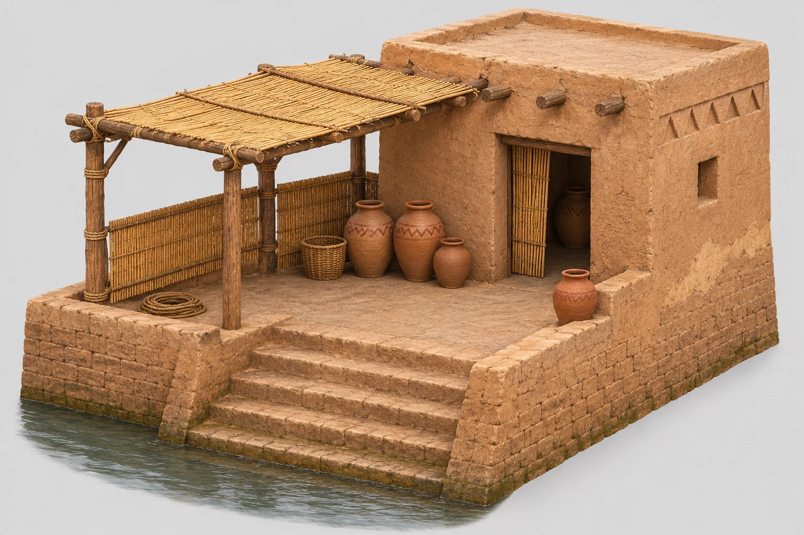
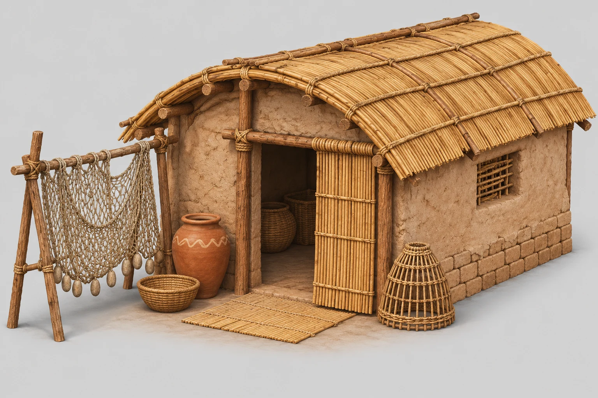
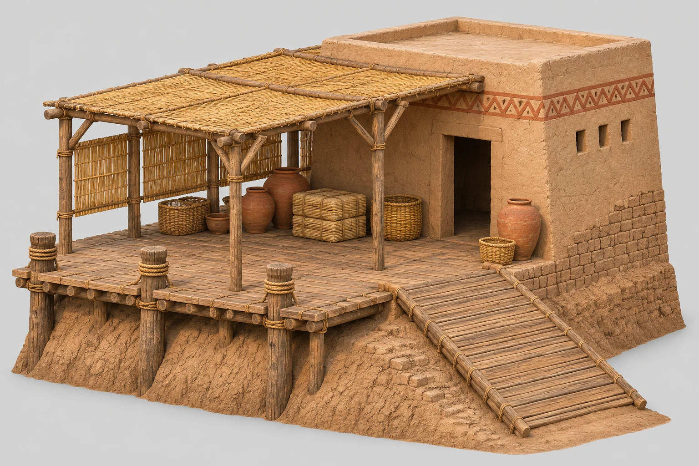
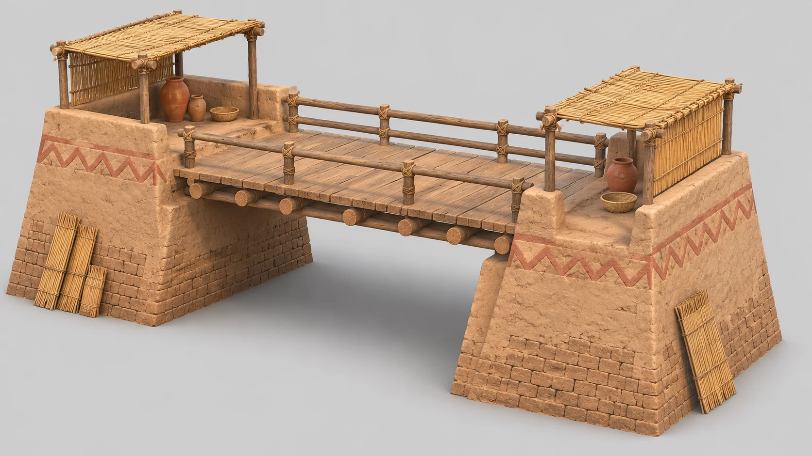

Референсы построек Южного Шумера
40 концептов построек и ссылки на актуальные GLB. Постройки сгруппированы по общим деталям и производственным цепочкам. Нажмите на картинку, чтобы открыть PNG в исходном размере.
Габариты сверены с актуальной версией игры. Под каждой карточкой доступна модель GLB. Иллюстрации показывают исходные концепты. Масштаб изображений условный.
Открыть модели в тестовом городе · Скачать все 40 GLB · Лист референсов · Компактный вариант рынка 1×1
Глина и кирпич
Низкий сырцовый бортик, прямоугольное корыто, тростниковый мат с двойной перевязью.




Печь для обжига
Габарит · 1×1
Высокая камера с загрузочным устьем, сырец у входа, терракотовые штабели на выходе
Глина → керамика → напитки и припасы
Один профиль пузатого сосуда с широким венчиком.






Двор молочных припасов
Габарит · 1×1
Затенённый стол с мелкими формами, молочный кувшин и полка для сыров
Ячмень и хлеб
Низкие зерновые корзины с двойным поясом плетения.


Урожай

Стада и ткань
Переносные плетёные панели и корзины для волокна.


Тростник и плетение
Связки с двумя перевязями и видимый край циновки.


Береговые строения
Открытый край у воды, тростниковые маты на простых рамах.








Мост через реку
Закладка · 1×1, пролёт по ширине реки
Плоский деревянный пролёт и два массивных устоя
Земляные работы
Уплотнённые откосы и прямой стык.


Инструменты и сырьё
Открытые рабочие места и крупная заготовка.


Дерево и лодочные детали
Парные опоры для брёвен.


Жилые дворы
Один и тот же глиняный порог и навес.


Торговля
Грузовые корзины, матовые навесы, просторный проход.

Священные строения
Симметрия входа, простая ось, места для приношений.


Укрепления
Прямоугольные контрфорсы и общий профиль кладки.